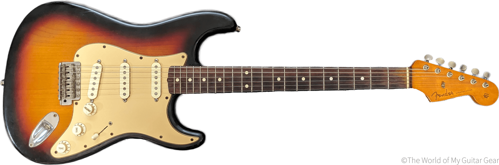
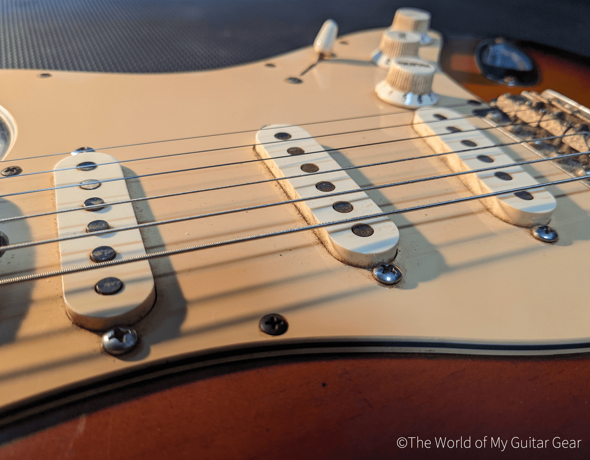
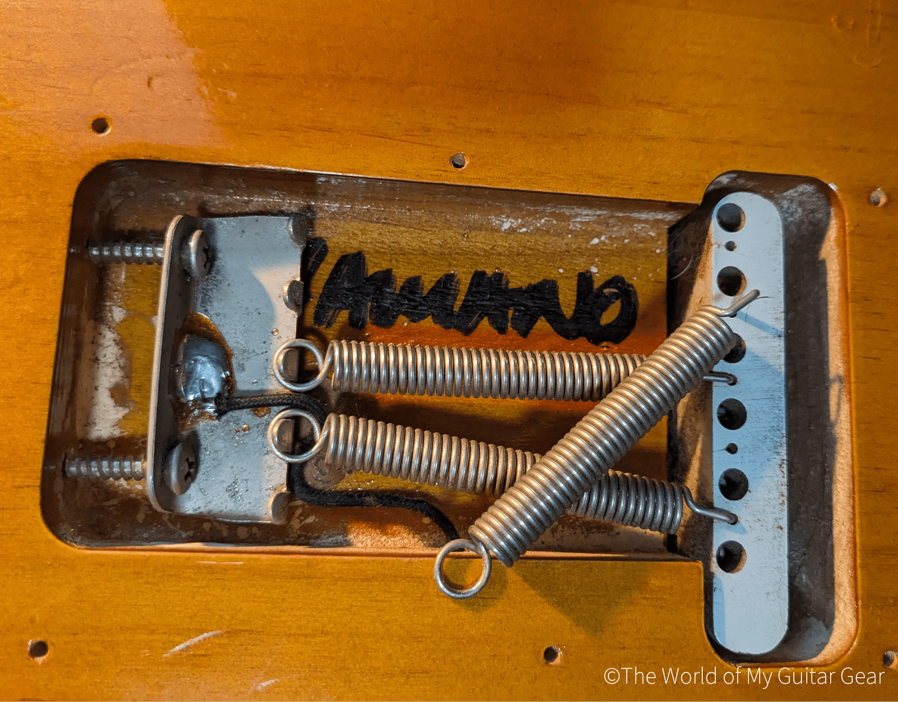
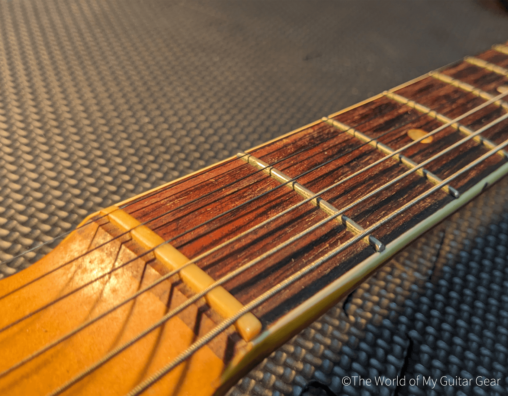
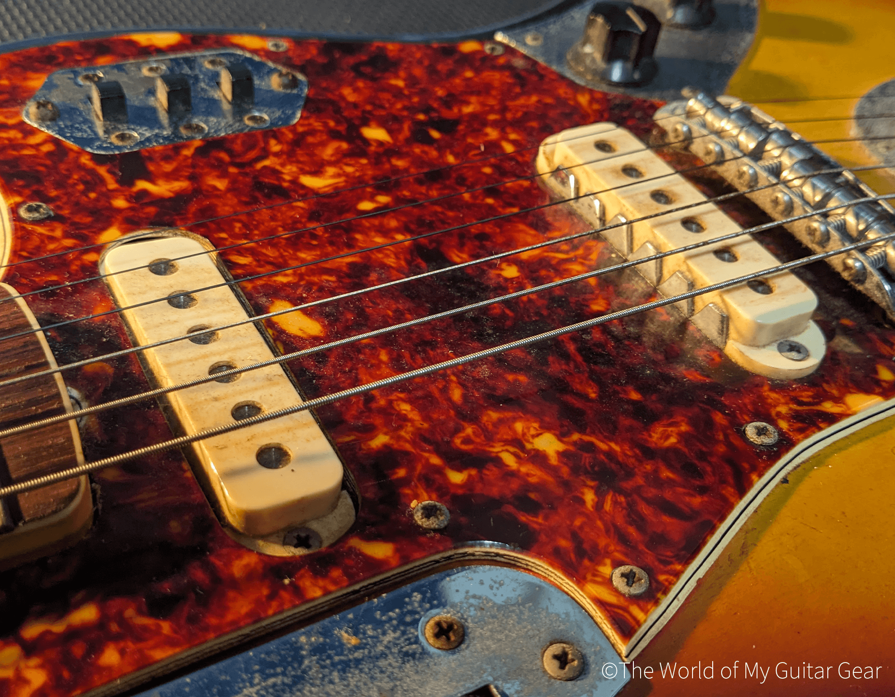
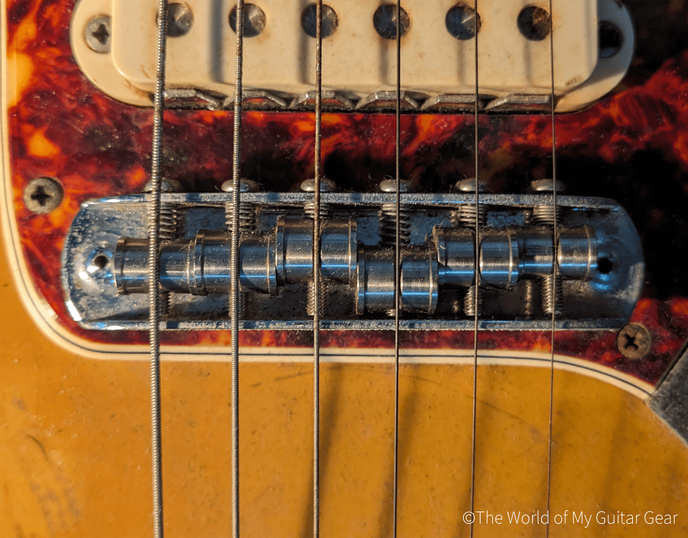

The World of My Guitar Gearへようこそ。このサイトでは、洋楽ロック（特にグランジ/オルタナ）好きの僕が所有する、ギターとエフェクターを厳選して紹介します。ギターは2本、エフェクターは3台、それぞれとの出会いやこだわりのポイントを紹介していきます。楽器が好きな人、音楽が好きな人に見ていただけると嬉しいです。
American Vintage Series
'62 Stratocaster Thin Lacquer / 3-Color Sunburst

2004年製。いわゆるAmerican Vintageというシリーズで、1962年製のモデルを再現。19歳のときに横浜の楽器店で購入。大学のときに勉強そっちのけで本気でバンドをやろうと思い、「ちゃんとした」ギターが欲しくて買った1本。
当時見たRed Hot Chili Peppersの『Live at Slane Castle』というライブDVDで、ギターのJohn Fruscianteが1962年製のストラトを使っていた。彼の圧倒的な存在感に終始目を奪われ、彼のことを崇拝と言ってもいいほどに私淑した。曲のコピーはもちろん、弾き方やステージ上の動きも徹底的に真似した。間違いなく、僕の音楽人生の中で一番大きく影響を受けた人物。
このギターを買ったときは彼が1962年製のストラトを使っているのは知らなかった。一番好きになるギタリストが、偶然同じモデル（僕のはリイシューだけど）を弾いてたので、勝手に運命じみたものを感じていた。
ストラップとピン

ストラップはFenderのものを使用。当時のJohnが使っていたGuitar Center（米大手楽器店）のストラップに似ていたのでこれに。激しく動いてもストラップが外れないように、ピンはSchaller製のロックピンに交換。
ピックアップ

ピックアップはすべて交換済み。フロントにSuhr V60、センターとリアはLollar Special。Suhrはローとミドルがしっかりと出てくれる。Lollarはコードを弾いたときの粒立ちがいいので、音像がぼやけずクリアに鳴ってくれる。
Thin Lacquerモデル

裏パネルは外して使用。バネは3本でななめがけに。ボディに書かれている「YAMANO」の文字は、塗装が薄くボディ鳴りが良いThin Lacquerモデルであることを表す。Fenderが当時輸入代理店だった山野楽器限定モデルとして作っていたもの。
1965 Jaguar / 3-Color Sunburst

1965年製のJaguar。ヴィンテージは状態の良さにばらつきがあるが、購入時点ですでにフレット交換と指板調整済だったため、コンディションはかなり良かった。
Jaguarといえば真っ先に思い浮かべるのがKurt Cobain。彼のものはピックアップがDiMarzioのPAFとSuper Distortionのハムバッカーに交換されているので、とてもパワフルなトーンに仕上がっている。
僕のものはシングルコイルなので、パワフルさには欠けるものの、独特の鈴が鳴るようなクリーンなサウンドが心地良い。どちらかというと、レッチリの「Under the Bridge」のMVでJohn Fruscianteが弾いていたJaguarの方が近いかも（レコーディングで使ったかは不明）。
フロントとリアピックアップの音量差が大きく、ヴィンテージ特有の扱いにくさはあるものの、その独特の枯れていながらも芯のあるトーンを一度味わうと忘れることはできない。
ナットとフレット

ナットは購入時既にオイルナットに交換されていた。これによりナットで弦のすべりが良くなり、チューニングが安定する。フレットも交換済みだったが、弾いていくうちに少しずつ減ってきている箇所も見受けられるようになってきた。
ピックアップ

パワー不足を解消するために、ピックアップはSeymour DuncanのQuarter Poundに交換。ピックアップ交換後もフロントとリアの音量差はなくならなかったものの、常にフロント・リアミックスで弾くので特に問題なし。
ムスタングブリッジ

ピッキングが強いと弦落ちするので、ブリッジはムスタング仕様に交換。素材はチタンなので、純正のブリッジよりもサステイン（音の伸び）が良い。弦の位置が定まるので、チューニングも多少安定するようになった。